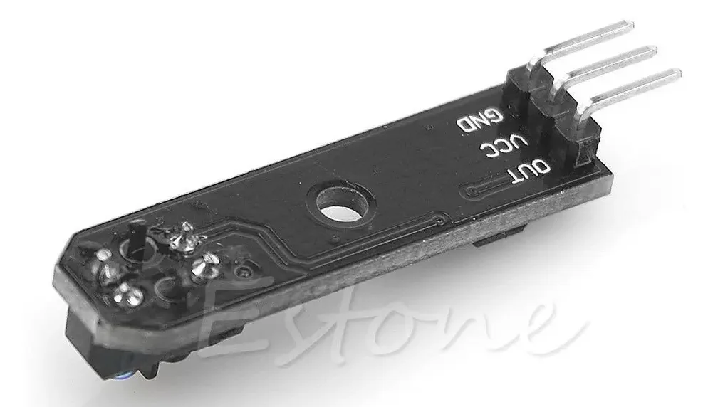
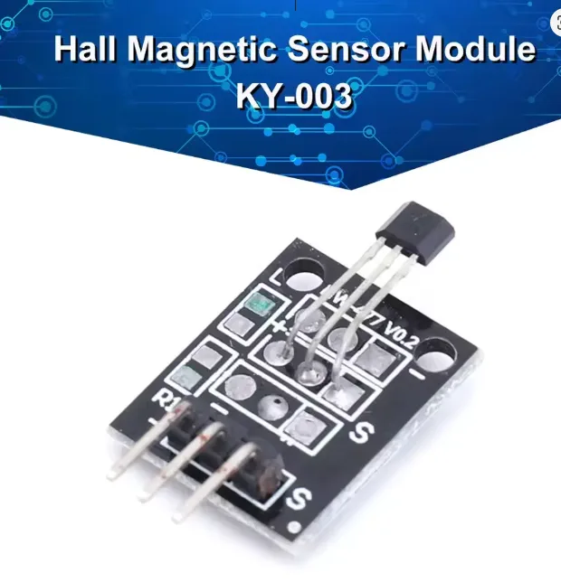

A
TCRT5000
Foto aportadaCandidato

Abrir fotoDetecta contraste reflectante. La foto muestra GND, VCC y OUT. Distancia, lógica y circuito del módulo deben medirse.
Capítulo 7 · Velocidad
La salida será RPM calculada a partir de pulsos, tiempo y pulsos reales por revolución.
Borrador completo · sensor final y soporte pendientesUn sensor ensayado a mano, con tensión de salida compatible con 3,3 V, un número de pulsos por vuelta medido y una posición física que no puede tocar el CD.
Ni OUT ni S garantizan nivel lógico, polaridad o resistencia de salida. Tampoco se supone que un rotor con 8 imanes produzca 8 pulsos.
Capítulo 7 · Opciones reales
Se montará uno; el otro queda como alternativa documentada.

Abrir fotoDetecta contraste reflectante. La foto muestra GND, VCC y OUT. Distancia, lógica y circuito del módulo deben medirse.

Abrir fotoDetecta campo magnético. Puede responder solo a una polaridad; PPR se mide con el patrón real de imanes.
| Criterio | TCRT5000 | KY-003 |
|---|---|---|
| Referencia | Contraste del CD o marca aprobada. | Imanes ya presentes en el rotor. |
| Intervención en rotor | Una marca añadida obliga a revisar masa y equilibrio. | No debería requerir otro imán. |
| PPR | Se cuenta físicamente. | Se cuenta para cada patrón/polaridad. |
| Distancia | Se determina en prueba real. | Se determina en prueba real. |
| Riesgo de lectura | Luz, contraste, vibración. | Polaridad, distancia, campos próximos. |
Capítulo 7 · Prueba aislada
Se usa alimentación de 3,3 V y multímetro u osciloscopio; la entrada ESP32 se conecta solo después.
| Prueba | Valor medido |
|---|---|
| VCC–GND | ______ V |
| OUT/S inactivo | ______ V |
| OUT/S activo | ______ V |
| Distancia estable | ______ mm |
| Flanco que se contará | Rodear: subida / bajada |
| 20 pasadas | ______ pulsos |
Capítulo 7 · Posición física
No se dibuja ni fotografía un soporte que no existe: se dejan requisitos y evidencias para el que realmente construyáis.
Sensor fijado al soporte que tengáis, con regla mostrando distancia al CD inmóvil.
Vista general dentro del resguardo cerrado, con cable y holguras visibles.
Capítulo 7 · Conversión
Introduce resultados medidos; la calculadora no fija valores del proyecto.
RPM = pulsos × 60 / (segundos × PPR)PPR es el número real de pulsos por una vuelta.PPR = pulsos / vuelta manualSe valida para cada sensor y configuración del CD.| Configuración | Sensor usado | Pulsos en 10 vueltas manuales | PPR aprobado |
|---|---|---|---|
| 4 imanes | ____________ | ______ | ______ |
| 6 imanes | ____________ | ______ | ______ |
| 8 imanes | ____________ | ______ | ______ |
Capítulo 7 · Cierre
Una referencia independiente debe confirmar la lectura y la respuesta ante pérdida de señal.